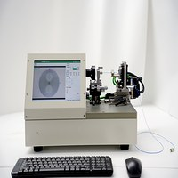
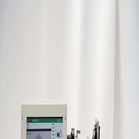
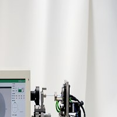
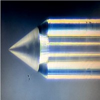

BULLS-PM2000
Automatic PM Fiber Axis Alignment & Measurement System
The BULLS-PM2000 is a high-precision instrument designed for automatic polarization-maintaining (PM) fiber axis angle alignment and measurement. Essential for applications in aerospace, defense, fiber gyroscopes, and advanced telecommunications where PM fiber orientation accuracy is critical.
Key Features
Precision alignment technology for mission-critical PM fiber applications
Automatic Axis Alignment
Intelligent image recognition automatically detects and aligns PM fiber slow/fast axis orientation, eliminating manual alignment errors and dramatically improving throughput.
High-Resolution Imaging
Integrated high-magnification CCD camera with advanced image processing algorithms provides clear visualization of fiber stress rods for accurate axis identification.
Sub-Degree Accuracy
Achieves alignment accuracy better than 0.5 degrees with 0.1-degree measurement resolution, meeting the most demanding specifications for PM fiber connectors.
Rapid Measurement Cycle
Complete axis detection and alignment in under 30 seconds. Batch processing mode further increases efficiency for high-volume production environments.
Data Logging & Export
Automatic recording of alignment results with statistical analysis. Export measurement data via USB for quality traceability and SPC integration.
Multi-Connector Support
Compatible with all standard PM fiber connector types. Interchangeable fixture adapters allow quick switching between different connector formats.
Technical Specifications
| Model | BULLS-PM2000 |
| Application | PM fiber connector axis alignment and measurement |
| Compatible Fibers | Panda, Bow-Tie, Elliptical-Core PM fibers |
| Alignment Accuracy | < 0.5° |
| Measurement Resolution | 0.1° |
| Measurement Range | 0° - 360° |
| Cycle Time | < 30 seconds (auto mode) |
| Camera | High-resolution CCD with 400x magnification |
| Display | 10" HD touchscreen with live preview |
| Data Interface | USB, RS232 |
| Power Supply | AC 220V / 110V, 50/60Hz |
| Power Consumption | ≤ 200W |
| Dimensions (W×D×H) | 480 × 380 × 420 mm |
| Weight | Approx. 28 kg |
Application Scenarios
Aerospace & Defense
PM fiber assemblies for fiber optic gyroscopes, sensors, and secure communication systems.
Telecommunications
High-performance PM connectors for coherent optical transmission and DWDM systems.
Scientific Research
Precision PM fiber alignment for interferometers, quantum optics, and laser systems.
Oil & Gas Sensing
PM fiber sensors for downhole temperature and pressure measurement in harsh environments.


Interested in the BULLS-PM2000?
Contact our team for detailed specifications, pricing, and customization options.